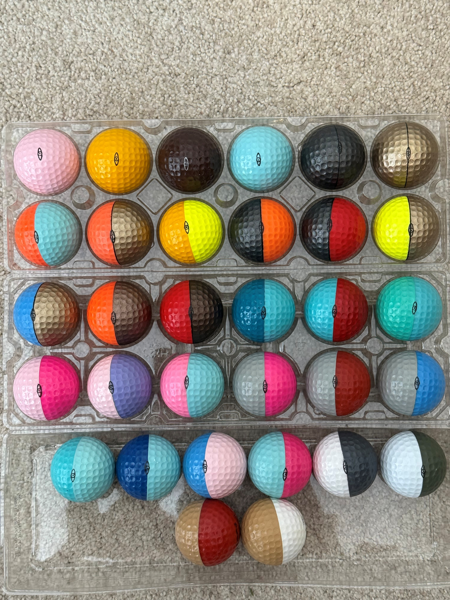

Factory Tour Reject Balls
The balls pictured here are rejected balls. Individuals on a factory tour had an opportunity to select up to four giveaway balls as part of the tour if they chose to. All the balls had an Eye or Ping on them.
Some of the issues were over-buffing, lettering issues, and the balls turning during the printing process. There were quite a few rare color combinations in this group of Ping balls.
What Makes a Ping Ball Rare?
Beyond the standard 250+ cataloged color combinations, rare Ping balls fall into several categories:
- Factory Rejects — Balls that failed quality control due to over-buffing, misaligned printing, or the ball turning during the color application process. These were given away on factory tours rather than sold.
- Unlisted Color Combinations — Because Karsten mixed color powder to create new shades, some combinations were produced in very small quantities and never appeared in official catalogs.
- Test Balls — Allen Solheim's hand-painted prototypes used to evaluate potential color pairings before committing to production runs.
- Short Production Runs — Some colors were made to order for specific customers and may have only been produced once.
Continue Exploring
- 🎨 Colors & Values Price Guide — See all 250+ color combinations with rarity ratings and values
- 🏋 Karsten Solheim — The story of Allen Solheim's hand-painted test balls
- 📖 Production History — How Ping balls were manufactured from 1976 to 1997
- 🏆 Collectors — Tips for building your Ping ball collection